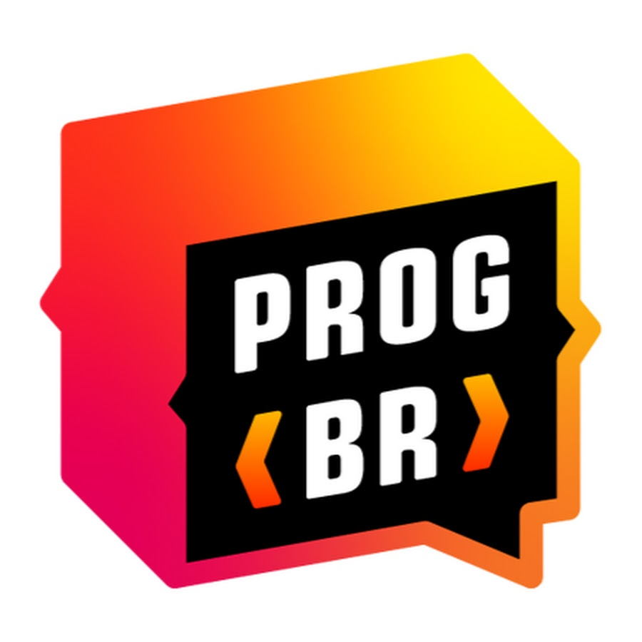

Cidade: Recife
Telefone: 81998288259
Email: jonathasfelipe_aroucha@hotmail.com
Graduação em ProPlayer FPS Gaming
Formado para jogar em alta performance em jogos de FPS.
Graduação Guitarra Pro
Formação básica/ intermediária de guitarra online.

Formado em Fullstack - Programador BR
Em busca da primeira experiência corporativa. Porém no Curso Fullstack do ProgamadorBR, desenvolvi e fiz vendas de alguns projetos.
Atendente telemarketing - LIQ
Trabalho atual em telemaarketing com atendimentos receptivos e dados bancários.